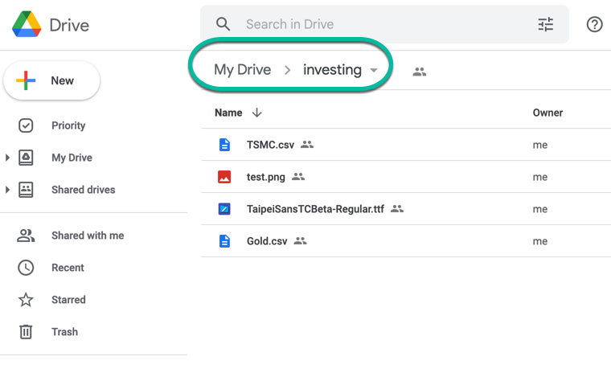
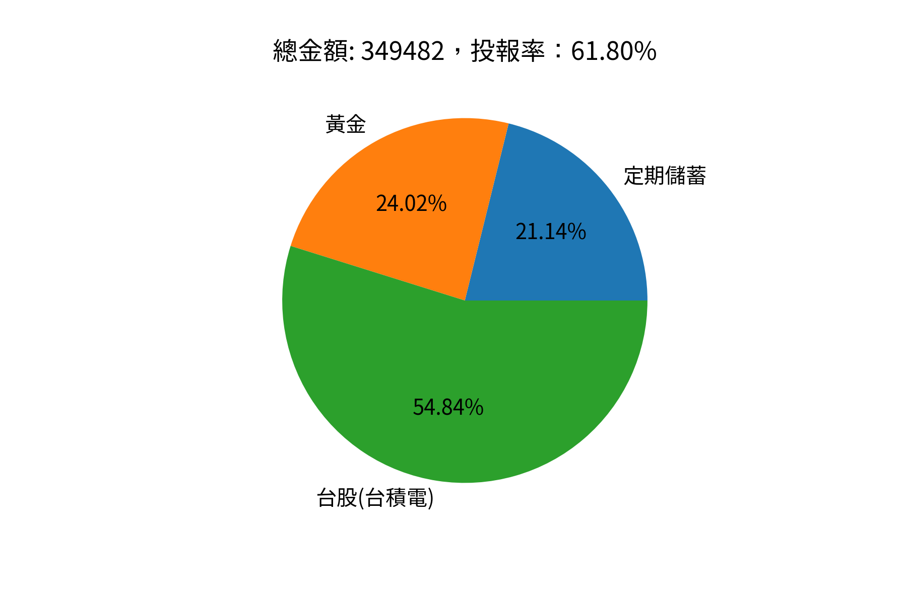
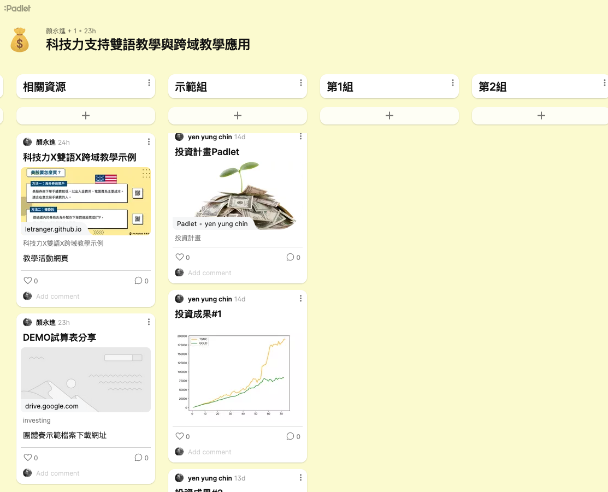

科技力Ⅹ雙語Ⅹ跨域教學示例
Table of Contents

1. 研習內容
- 研習對象及人數:本市公私立國中教師，預估30人
- 研習時間:111年12月29日（星期四）9:00-12:40
研習地點:輔導團305電腦教室

2. 教學計劃：Let’s Make Big Money
2.1. 設計理念
科技始終來自惰性
動機始終來自利益
(Yen, 2022)
- 天下攘攘，皆為利往。天下熙熙，皆為利來。《六韜》《史記‧貨殖列傳》
- 倉廩實而知禮節，衣食足而知榮辱。《管子·牧民》
- 用錢能解決的都不是問題，問題是沒錢。《俗話》
2.2. 教學目標
2.3. 跨域學習素養
2.4. 教學內容
- Part I: Way to Become Rich
- 投資簡介(1HR)
- 理財達人團體賽(2HR)
- 投資簡介(1HR)
- Part II: Can AI Make Everyone Rich
- AI簡介(1HR)
- CNN實作(2HR)
- 以AI預測股價(2HR)
- AI簡介(1HR)
3. Part I: Way to Become Rich
3.1. 投資從現在開始
學完這門課，你
- 不會變成投資達人
- 不會變有錢
- 不會變成AI專家
但是你會
- 了解投資的重要性
- 也許 開始行動
- 可能 會覺得AI很有趣，將來會花時間去研究它
3.2. 活動說明
- 理財達人團體賽(Financial Talent Team Competition)
- Competition Rules
在這裡我們要先違反Buffett的一項原則：集中而非分散，原因是學生無暇時常觀注股票或隨時進出
- 投資期限： to
- 分三種投資項目，每個項目每月投入1000元
- 三種投資項目中需包含台股、美股各一檔
- 股票配股配息併入下月購買資金，只要基於真實數據均可列入計算(各股配息資訊需自行搜尋)
- 假設所有股票均提供零股買賣，且零股可以小數點買進(現實中股票最低買賣單位為1股)
- 假設零股交易價格與一般交易相同(現實中零股買賣價格不同於市價)
- 選擇其他投資商品如基金、期貨、選擇權、政府公債者需請自行研究獲利計算規則
- 六年中只能於每月 第一個交易日 買進投資商品（不可短進短出）
- 不考慮手續費、證交稅、等因素
- 只能選擇可持續交易六年之投資商品
- 投資期限： to
3.3. Introduction to investing
教師課堂介紹/Slide
3.4. Get Hands Dirty: DEMO
- 流程
- 查詢投資資料
- 計算逐月累計投報金額
- 滙出CSV檔、上傳至Google Drive
- 建立(下載)Colab python，繪製圖表
- 上傳報告
- 查詢投資資料
- 教師示範: 黃金 / 台積電
- 資料查詢
- 逐月投報計算
- 匯出CSV檔
上傳至Google Drive

Figure 1: 上傳至Google Drive的資料夾中(此例中資料夾名稱為investing)
- 建立(下載Colab iPython notebook)
- Google Colab
- 講師ipynb檔案分享
- 以下程式為colab版本
- Google Colab
#先安裝所需模組 !pip install google.colab from google.colab import drive drive.mount('/content/drive') #⌨️⌨️⌨️出現提示欄進行授權 import os os.chdir('/content/drive/MyDrive/investing') #⌨️⌨️⌨️切換該目錄 os.listdir() #確認目錄內容有你的csv檔 #用Pandas讀取csv檔，檢視內容是否正確 import pandas as pd #⌨️⌨️⌨️這裡要改成自己的檔案名稱(gold, tsmc, Gold.csv, TSMC.csv) gold = pd.read_csv('Gold.csv', encoding='utf8') tsmc = pd.read_csv('TSMC.csv', encoding='utf8') print(gold) print(tsmc) #解決Colab畫圖時中文顯示問題 import matplotlib.pyplot as plt #這裡要改成自己的檔案名稱(如gold, tsmc, Gold.csv, TSMC.csv) plt.plot(tsmc['月份'], tsmc['累計財富'], c='orange') plt.plot(gold['月份'], gold['累計財富'], c='green') #plt.plot(gold['月份'], tsmc['累計財富'], gold['累計財富']) plt.legend(["TSMC", "GOLD"], loc="upper left") plt.show() #整體績效報告 #零存整付存款到期本利和：73,893 元 #這裡要觀察檔案內容，看看最後累計財富是在第幾列 print(gold['累計財富'][71]) print(tsmc['累計財富'][72]) #手動填入三種投資工具名稱及獲利金額 profits = [73893, 83950, 191639] tools = ['定期儲蓄', '黃金', '台股(台積電)'] #畫圖 plt.clf() plt.pie(profits, labels = tools, autopct = '%3.2f%%') print(f'投入金額: {3000*72}元') print(f'總金額: {sum(profits)}，投報率：{100*(sum(profits)-3000*72)/(3000*72):.2f}%') plt.title(f'總金額: {sum(profits)}，投報率：{100*(sum(profits)-3000*72)/(3000*72):.2f}%') #可以移除下行之註解符號「#」，將圖表以較高解析度下載儲存 #plt.savefig('test.png',dpi=300) plt.show()
投資成果視覺化報告

Figure 2: 投資報告#1

Figure 3: 投資報告#2
上傳投資報告
Padlet上傳網址

- 資料查詢
3.5. Get Your Hands Dirty
3.6. 成果報告
- 分析各組投資成效
- 評估不同投資商品優缺點
- 頒奬: 累計投資 收益最高 的一組、累計投資 損失最多 的一組
4. Part II: Can AI Make Everyone Rich
4.1. What can AI do?
- What Can AI Do?
- 個人創作上傳
圖片或影片直接拖至Padlet網頁畫面即可新增Post，Post標題請標名學號/姓名
- Browser screenshot tools: FireShot、Numbus、Awesome Screenshot & Screen Recorder
無不無聊: 分享一段你和chatGPT的對話
天馬行空: 分享你在DALLE的創作與原創文字
- Browser screenshot tools: FireShot、Numbus、Awesome Screenshot & Screen Recorder
4.2. Introduction to AI
教師課堂介紹/Slide
4.4. Let’s Get Greedy
在這裡我們要先違反Buffett的一項原則：不預測市場走勢
- Get a taste of AI
- CNN-1: 以AI預測股價-隔日漲跌
- CNN-2: 以AI預測股價-隔日漲跌
- LSTM: 以AI預測股價-隔日漲跌
- 小組競賽：
- 自行挑選個股、下載股價、建立股價預測模型，以各組模型之loss值為比較依據。
- 各組成績登錄
- 自行挑選個股、下載股價、建立股價預測模型，以各組模型之loss值為比較依據。
- CNN-1: 以AI預測股價-隔日漲跌
- Model revision
- 多讀些原始資料
- 用更多特徵值來預測
- 用更多/更少天數來預測
- 變更模型架構
- 變更訓練集:測試集比例
- 增加epoch
- 多讀些原始資料